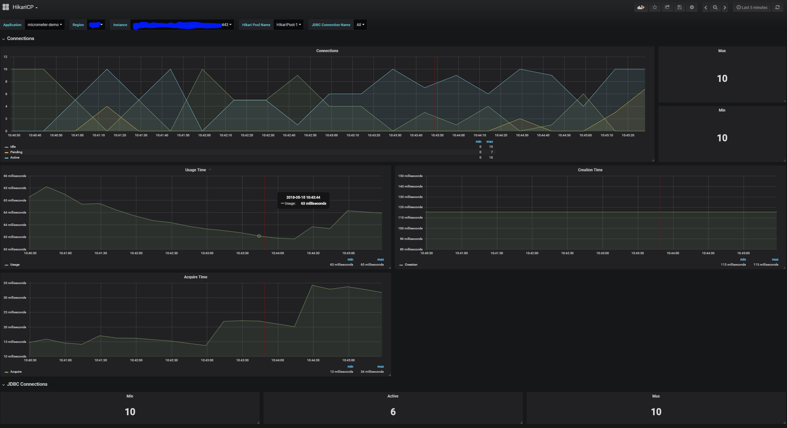

HikariCP提供了一些监控指标，他的监控指标都是基于MicroMeter提供出来的，然后支持Prometheus和Dropwizard。本次我们将讨论一下HikariCp的监控指标有哪些，为什么提供这些指标，以及咱们如何去做监控。
就像com.zaxxer.hikari.metrics.PoolStats提供的那样，几个重要的指标都存储在poolState中。
totalConnections
总连接数，包括空闲的连接和使用中的连接。
idleConnections 空闲连接数
activeConnections
活跃连接数
totalConnections = activeConnection + idleConnections
pendingThreads
正在等待连接的线程数量。排查性能问题时，这个指标是一个重要的参考指标，如果正在等待连接的线程在相当一段时间内数量较多，可以考虑扩大数据库连接池的size。（即HikariCP的maxPoolSize）
maxConnections
最大连接数，统计指标，统计到目前为止连接的最大数量。
minConnections
最小连接数，统计指标，统计到目前为止连接的最小数量。
usageTime
每个连接使用的时间，当连接被回收的时候会记录此指标：com.zaxxer.hikari.pool.HikariPool#recycle
acquireTime
获取每个连接需要等待时间，一个请求获取数据库连接后或者因为超时失败后，会记录此指标。
connectionCreateTime
连接创建时间
这里拿我们比较熟悉的SpringBoot项目为例，同时使用prometheus和grafana，项目中加入promethues的依赖：
implementation 'org.springframework.boot:spring-boot-starter-actuator'
implementation 'io.micrometer:micrometer-registry-prometheus:1.3.0'同时在SpringBoot项目的application.properties配置文件中加入以下参数：
management.endpoints.web.exposure.include=prometheus 暴露prometheus格式化的指标，这样可以被promethues服务器抓取接下来我们需要启动一个prometheus的服务，https://prometheus.io/download/ 然后更改下peometheus服务的默认配置再启动，追加配置如下：
- job_name: 'prometheus-test' # job名称
scrape_interval: 5s # 抓取时间间隔，这里每5s像数据源请求一次
metrics_path: '/actuator/prometheus'
static_configs:
- targets: ['127.0.0.1:8080'] # 这里是springBoot项目的地址接着启动一个grafana的服务，https://grafana.com/get 启动后添加prometheus数据源，制作仪表盘等。

Micrometer
Vendor-neutral application metrics facade（与供应商无关的应用程序指标外观）。我们可以把它类比于日志框架中的slf4j。把promethues类比于logback。应用程序直接依赖Micrometer来暴露指标。Micrometer比较受欢迎，已经作为SpringBoot2.0内置的指标门面库。
Dropwizard
一个Java框架，类似于SpringBoot，但国内使用较少。其中有提供metrics相关的功能。
Prometheus
一个监控器的实现，基于pull模型，定时像prometheus数据源拉取指标信息。做分析、处理和展示。